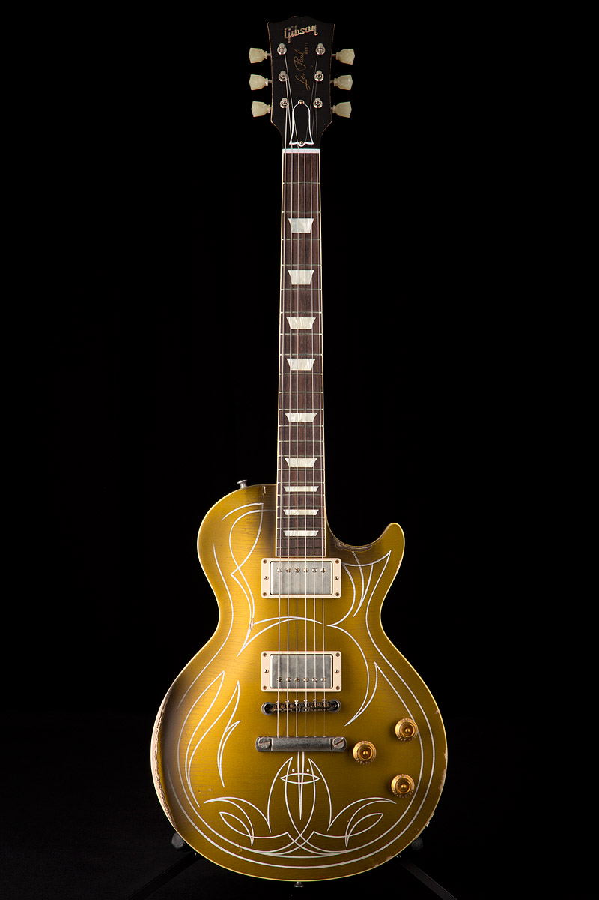
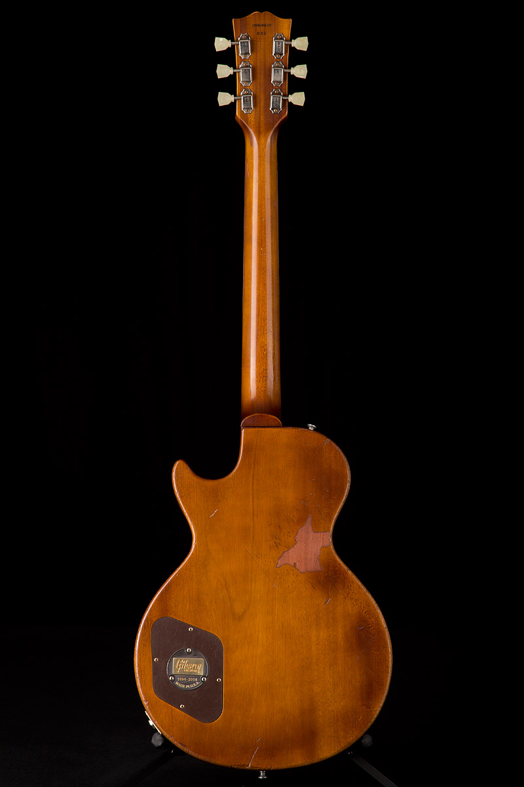
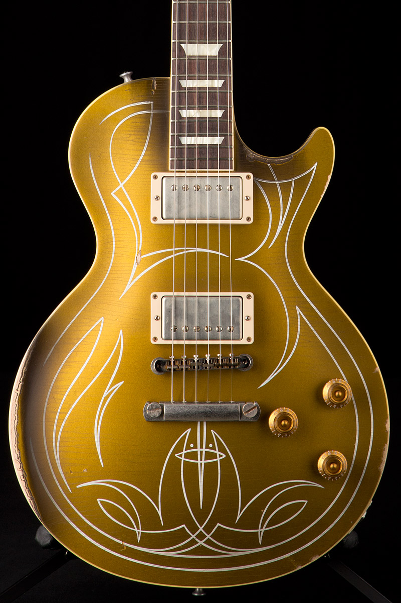
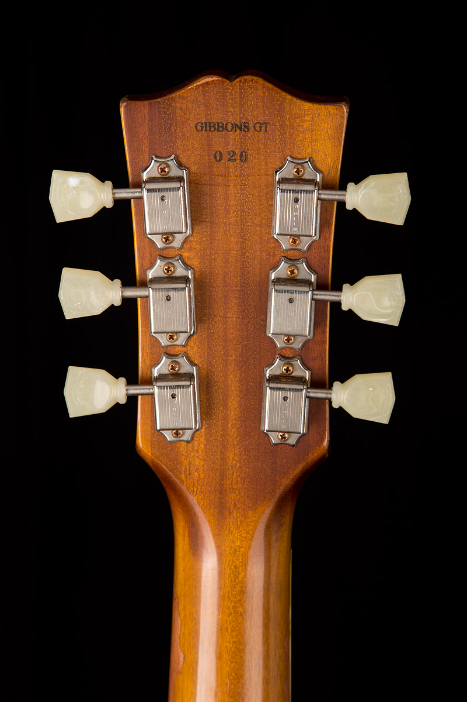

   
Electric Guitars
Gibson Billy F. Gibbons Les Paul Aged Goldtop
Retail:$12,939.00
GSP:$9,165.99
The first ground-up revision of Gibson’s stunning original solidbody electric in over 60 years is a masterpiece of style. In addition to its luscious goldtop finish, it features a unique pinstripe design created by Billy himself, which is hand-recreated one at a time by respected hotrod-pinstripe artist Rick Harris and a Gibson artist trained personally by Rick. Sonically and visually, the guitar blows the doors off the venue with a neck profile measured precisely from the Rev’s own Les Paul, ultra-light construction, custom electronics, and a pair of Seymour Duncan Pearly Gates pickups.